Учиться танцевать
Танцоры
Что хотят
Находить занятия и события под свой стиль и уровень, знакомиться и расти внутри сообщества
Боль
Информация разбросана, а о педагоге почти ничего не понятно до первого занятия
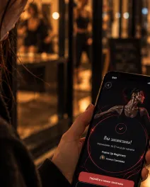
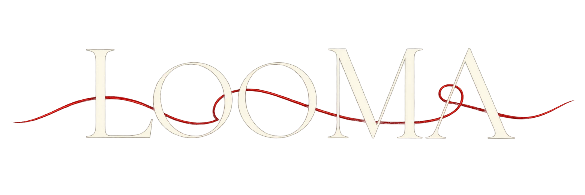
Занятия, события и люди — в одном месте
Кейс за 30 секунд
Занятия, события и люди разбросаны по чатам и соцсетям — танцорам сложно найти своё, а знакомства теряются
Концепт-проект, делала одна: проблема и гипотезы, метафора и айдентика, UX/UI, тестирование
Персональная лента занятий, событий и людей, кабинет педагога и «Ваша нить» — история общих встреч
Все 5 педагогов опубликовали занятие в прототипе сами — за 4 шага вместо 9. Поле с лимитом мест после теста сделала заметнее
В Looma две роли — «Учиться танцевать» и «Преподавать». Их выбирают в начале онбординга и могут совмещать
Что хотят
Находить занятия и события под свой стиль и уровень, знакомиться и расти внутри сообщества
Боль
Информация разбросана, а о педагоге почти ничего не понятно до первого занятия

Что хотят
Набирать учеников, публиковать занятия и рассказывать о себе
Боль
Расписание и анонсы приходится вести сразу в нескольких местах
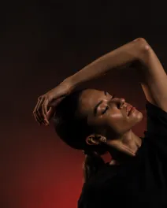
Провела интервью с 6 знакомыми танцорами: как они находят занятия и где узнали о последних — набралось 10 случаев. Ещё поговорила с 3 педагогами о том, как они публикуют расписание и собирают записи
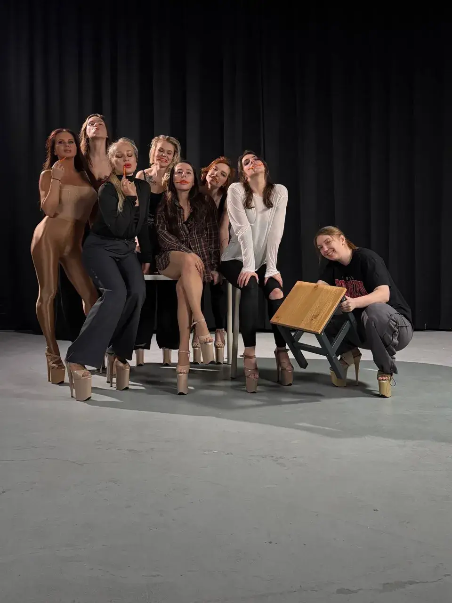
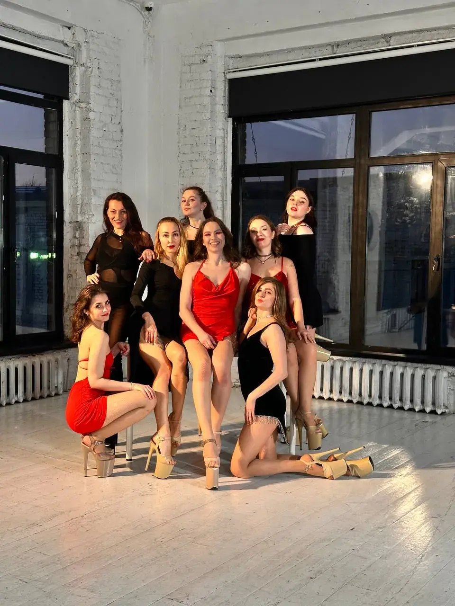
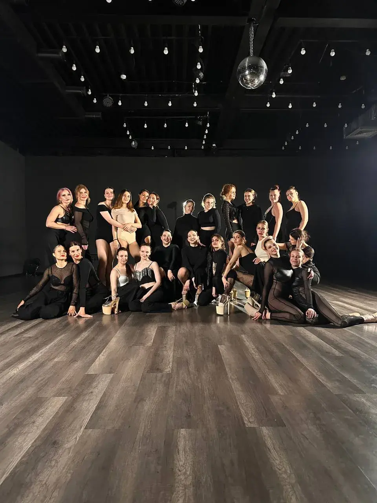
Где нашли последнее занятие · 10 случаев
Это 10 случаев от 6 танцоров из моего окружения, а не доля каналов в целом. Выборка маленькая — это ограничение исследования
«Расписание у меня в трёх местах: чат группы, сторис и пост. Если что-то переношу — правлю везде и всё равно кто-то приходит не в то время»
— педагог, Frame Up
«Про мастер-класс узнала из сторис подруги. Пока собралась записаться, сторис уже пропала»
— танцовщица, 2 года в High Heels
Что заметила в разговорах
«Сначала думала, что главная проблема — нет единого места для поиска занятий. Но в разговорах заметила ещё одну: даже когда человек находит подходящее занятие, ему не всегда понятно, актуальны ли расписание и условия записи»
Одна гипотеза выросла из исследования, две — мои предположения, которые ещё нужно проверить. У каждой есть метрика
Главная метрика
Записи на занятия и события в неделю
Человек нашёл занятие и записался — ради этого всё и затевалось. Связи растут уже из этих встреч
Если сначала показать подборку, а регистрацию дать последней, больше новичков дойдут до первой записи
Предположение · не проверено
Метрика
Доля дошедших от старта онбординга до первой записи
Если опубликовать занятие проще, чем вести чаты, педагоги начнут вести расписание в Looma
Из исследования
Метрика
Доля педагогов, опубликовавших первое занятие в первую неделю
Если после общей встречи предложить связь, люди будут возвращаться в приложение
Из моего опыта · не проверено
Метрика
Доля принятых запросов на связь и доля вернувшихся через 30 дней
Сфокусировалась на главном пути: найти занятие, прийти и познакомиться. Остальное — в следующие версии
Вошло в MVP
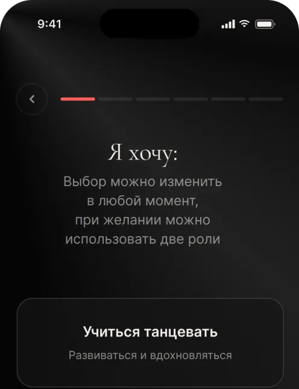
Онбординг с выбором роли
Без него не собрать персональную подборку
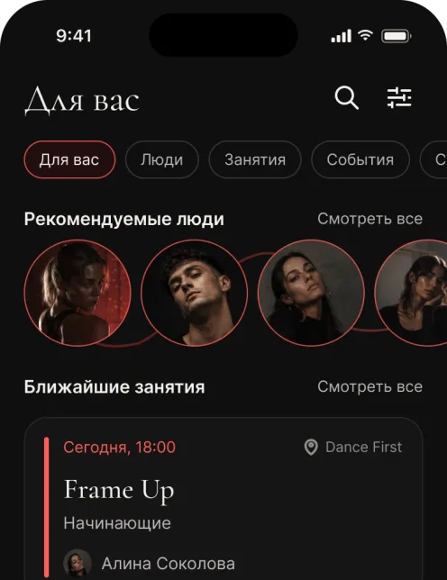
Лента «Для вас»
Главная точка входа: занятия, события и люди
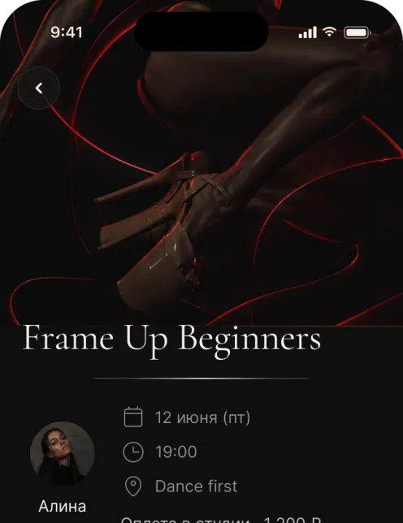
Запись, напоминание, отмена
Важно не только записаться, но и прийти
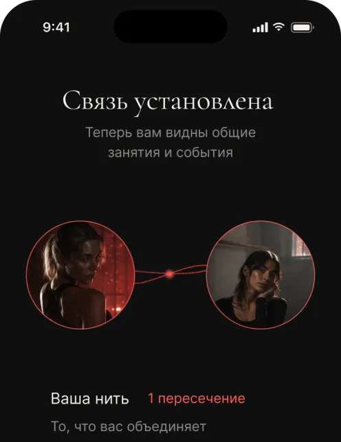
Связи и «Ваша нить»
Отличает Looma от расписаний и афиш
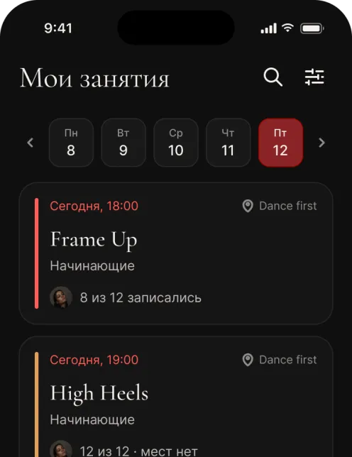
Кабинет педагога
Без педагогов нет занятий в ленте
Отложила
Позже
Чат между пользователями
Сначала проверить, нужны ли связи вообще
Позже
Оплата внутри приложения
Сложно и дорого; на старте — оплата в студии
Позже
Отзывы и рейтинги педагогов
Нужна база занятий, чтобы было что оценивать
Позже
Уведомления о пересечениях
Добавлю, когда связи начнут расти
Четыре решения, над которыми я думала дольше всего, и чем за них пришлось заплатить
Онбординг сначала показывает, что даёт Looma, и собирает направления и вайб. Регистрация появляется последней — когда уже понятно, зачем она нужна
Цена: контакт пользователя узнаём позже, часть людей уйдёт без регистрации
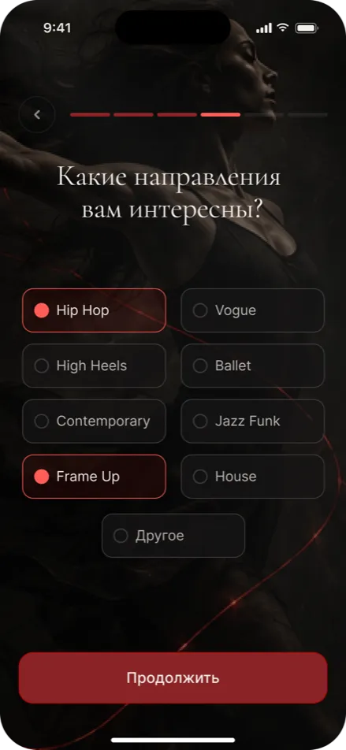
Танцор и педагог — часто один и тот же человек. Роль выбирается на старте, её можно сменить или совмещать обе в одном аккаунте
Цена: интерфейс сложнее — нужен переключатель ролей. Чтобы не путать, в меню меняется только один пункт
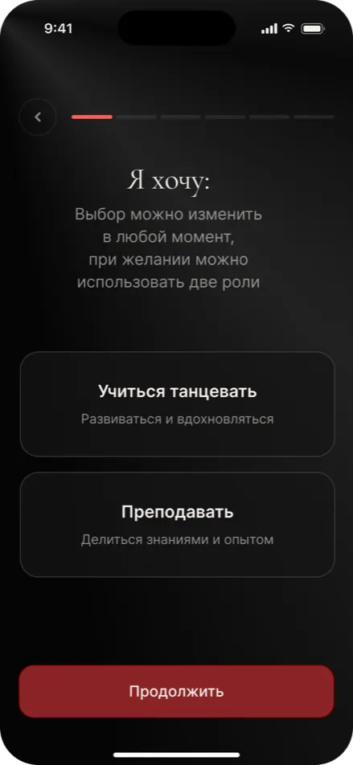
Педагог рассказывает о себе в коротких видео. Характер и энергию танцора видно ещё до первого занятия
Цена: педагогу нужно снять видео, порог входа для него выше
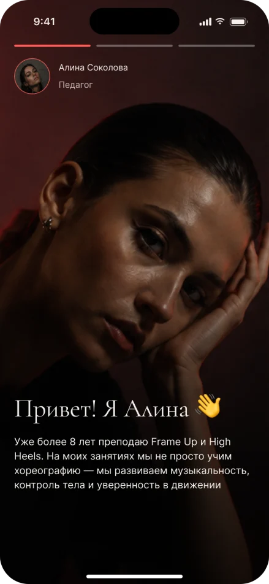
Связь появляется, когда её подтверждают оба. После этого открывается «Ваша нить» — история общих занятий и событий
Цена: сеть растёт медленнее, зато без спама и навязчивых контактов
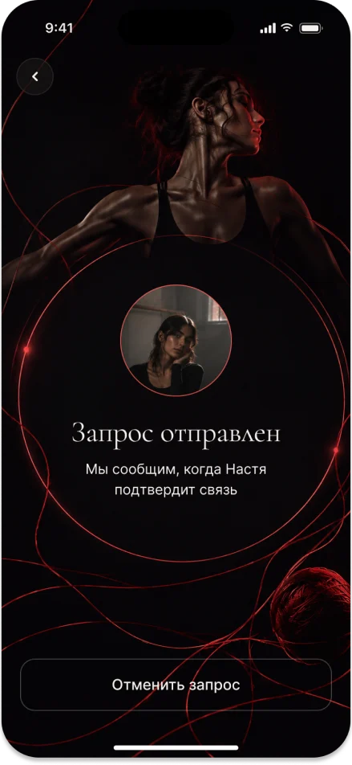
Красная нить — метафора связи между людьми
Вы встречаетесь в танцевальной среде — на занятиях, событиях или через общие интересы
Вы добавляете друг друга и устанавливаете связь
Все пересечения собираются в одну нить — историю ваших общих точек
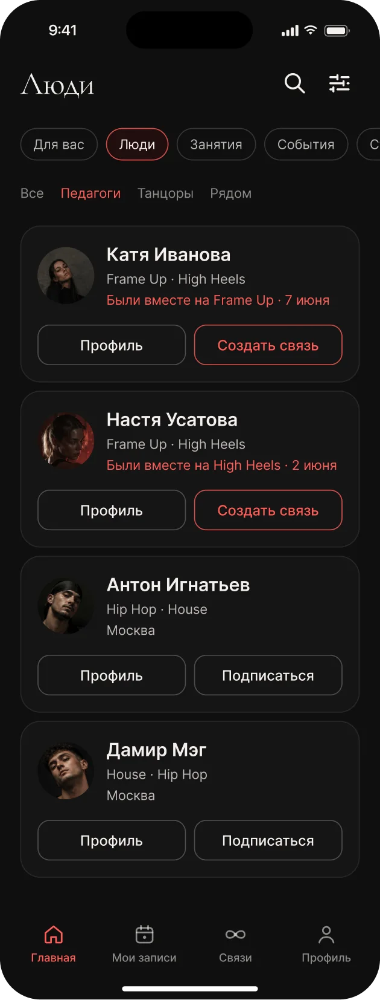
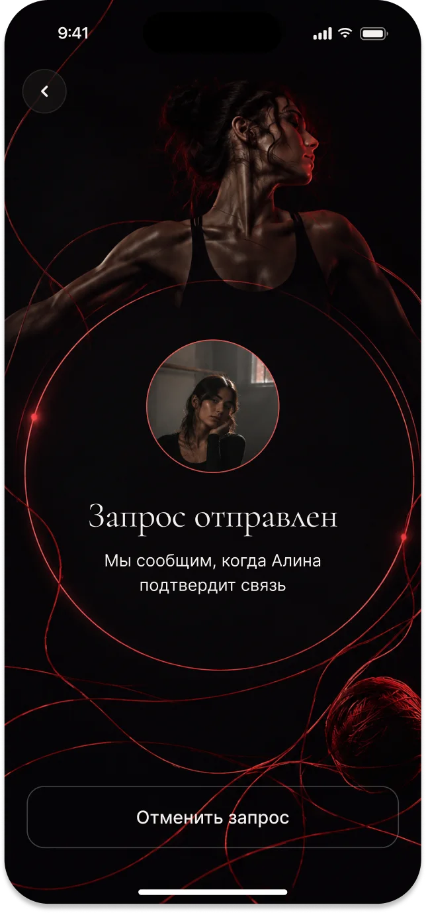
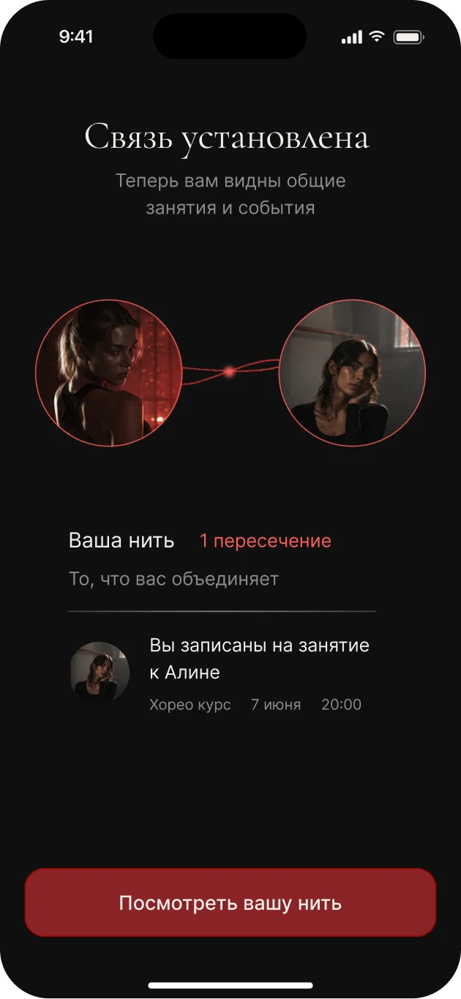
Логотип строила вокруг той же идеи, что и продукт: связь между людьми
Нить проходит сквозь буквы и связывает их в одно слово. Иконка — простая петля из той же красной нити: связь, которая возникает между людьми и продолжает соединять их истории
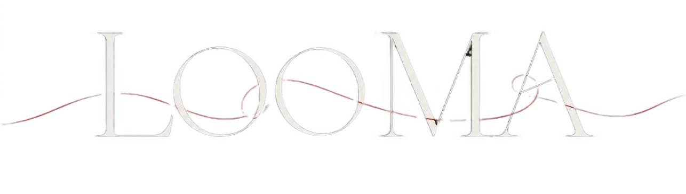
Познакомить с возможностями Looma и показать ценность приложения ещё до того, как человек начнёт искать занятия
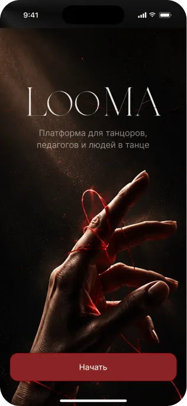
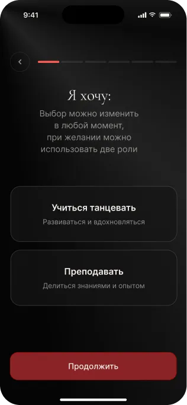
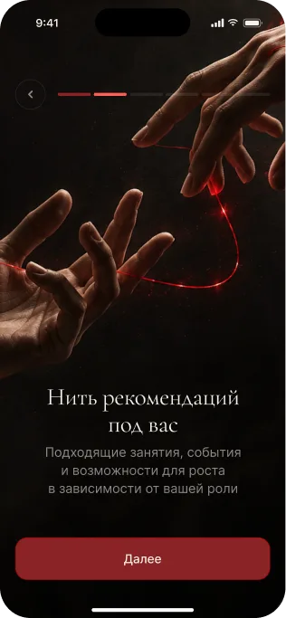
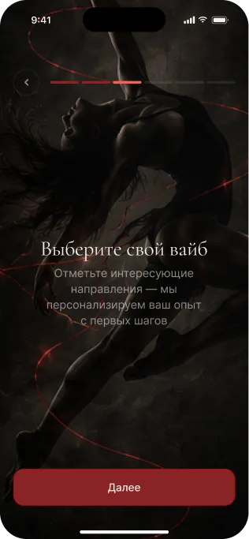
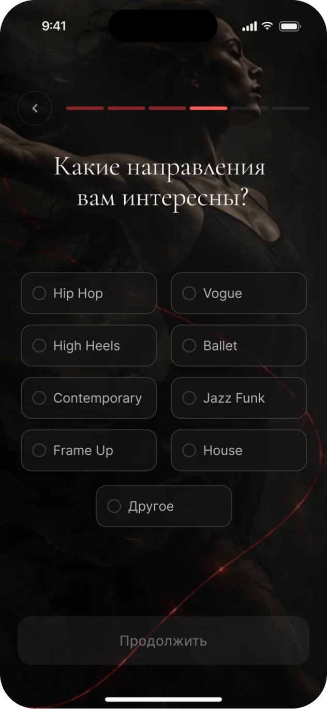
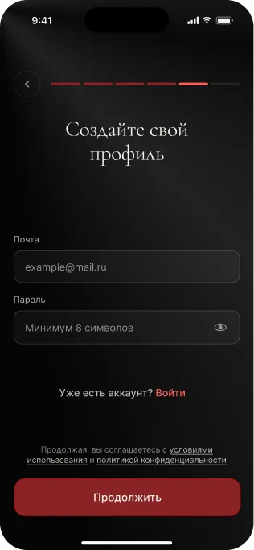
Начала с педагогов: без их занятий лента пустая и танцору нечего искать. Попросила 5 педагогов показать, как они обычно размещают анонсы, а затем выполнить ту же задачу в прототипе
Анонс публикуют в чате группы и сторис, иногда закрепляют в профиле. Записи собирают через сообщения, а свободные места отслеживают вручную
Педагог заполняет информацию о занятии и публикует его в общей ленте. Запись участников и количество свободных мест отображаются автоматически
9 шагов
4 шага
В Looma анонс публикуется в одном месте и за меньшее число шагов, чем в привычных каналах. Шаги — типичный путь участников теста. Время засекала от начала до конца задачи и округлила
5/5
педагогов опубликовали занятие в прототипе сами. Где возникла заминка и что я поменяла — в следующем блоке
Тест проверял удобство интерфейса, а не готовность педагогов полностью перейти на новую платформу
Что заметила, пока педагоги публиковали занятие в прототипе, и как поменяла форму
5
Участников
Создать и опубликовать занятие
5 из 5 справились
Один не сразу нашёл поле с количеством мест — доработала
Один участник не сразу нашёл, где указать количество мест. Я вынесла поле «Мест» рядом с ценой и добавила пояснение к настройкам записи
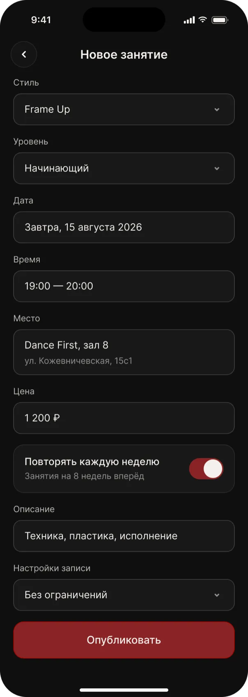
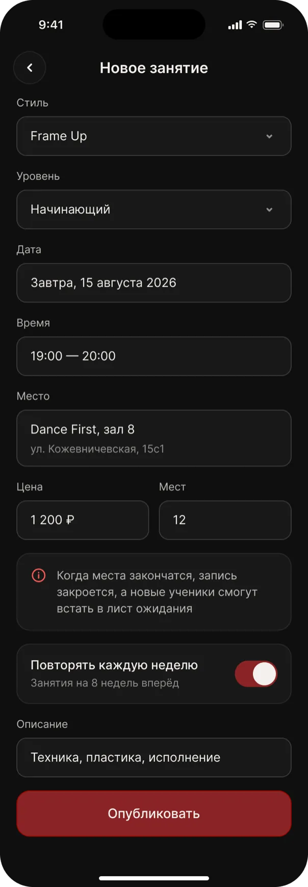
Что дал проект и что я проверила бы следующим шагом
Живой прототип — нажимайте прямо здесь
Живой прототип
Онбординг, запись на занятие, связь с человеком и кабинет педагога — всё кликабельно
(01) Продуктовый кейс · Looma
↑ К началуСпасибо
за внимание
Пусть ваша нить найдёт своих людей